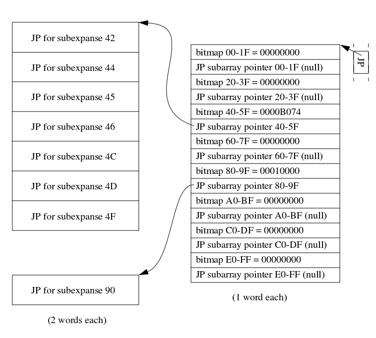

Judy Arrays
The difficult we do immediately; the impossible takes a little longer
From the manual:
Judy is a programming library that provides a relatively simple interface (API) for array-like storage of word or string indexes with optional mapping of indexes to single-word values.
Judy arrays are remarkably fast, space- efficient, and simple to use. No initialization, configuration, or tuning is required or even possible, yet Judy works well over a wide dynamic range from zero to billions of indexes, over a wide variety of types of data sets -- sequential, clustered, periodic, random.
Traditional Array
- Array consists of contiguous segments of elements that are indexed via a start location plus a memory offset
- Very fast lookup, insertion, deletion of any given index
Disadvantages
- What if I want to store a value with index 0 and another value with index 2^64-1 ?
- How to efficiently iterate in order over sparse set?
- How to quickly get a count of elements in array?
Terms
Population: The set of elements stored in the datastructure
Expanse: The range of possible keys that can address the datastructure
Basic Judy Concept
Suppose we want to be able to store up to N values with key expanse N
A simple flat array requires N memory usage
Here's an idea: what if we use more than 1 array to lookup the index?
Divide our original array in half, and decode the key in steps.
Take the first half of the key and lookup a pointer to another array. Take the second half of the index and lookup the final value in the second array.
If the population is sparse we can likely just use null pointers for most of the entries in the first array, saving memory.
This basic data structure of multiple levels with multiple fanout pointers from each is known as a digital tree or "trie".
Digital Tree
Decode "485"

The order of a digital tree is the number of branches that can be taken.
A low order wastes less memory because fewer entries in each branch are null pointers.
However a low order tree is deeper and requires more indirections to decode the key.
CPU cachelines
In a real machine main memory access is painfully slow, which is why memory accesses are loaded into the CPU cache
The amount of memory cached from a single read is typically 16 machine words long
Algrithms that want to be fast must be cache aware and be designed from the ground up to efficiently make use of the CPU cache

Judy
Judy uses order 256 branches for performance
With vanilla tries this would waste a large amount of memory
Judy uses a variety of tricks in order to compress the size of each branch or leaf depending on how 'full' it is
Judy arrays come in 4 different flavours:
- Judy1 - maps fixed size key to binary true/false
- JudyL - maps fixed size key to fixed size value
- JudyHS - maps variable sized key (string) to fixed size value
- JudySL - maps null terminated string to fixed size value
Judy1 and JudyL array internals
- Judy Array Pointer (JAP)
- Root leaves
- Judy Population/Memory Node (JPM)
- Judy Pointer (JP)
- Judy Branches
- Juay Leaves
Judy Array Pointer
- Root pointer to the entire Judy array
- Ordinary 1 word pointer
- Because it always references a 2 word aligned object, we can use the least 3 significant bits to encode the object type for free
- Can optimize for the case where there is only 1 or 2 indexes in the entire array, especially when there are a huge number of separate arrays
Judy Arrap Pointer

Root Leaves
- If population is small enough we store all the entries in a root level leaf
- The leaf is limited to 2 words for Judy1 and 4 words for JudyL
Judy1 Root Leaves

JudyL Root Leaves

Judy Population/Memory Node
- JPM used when Judy array's population is larger than 31 indices
- JPM is 10 words in size and includes total population counter, pointers to the first and last Judy Pointers as well as other information
Judy Population/Memory Node

Judy Pointers
Can point to various classes of children nodes:
- null
- branch
- leaf
- immediate indexes
- full population (Judy1 only)
A JP is always 2 words in size and can be thought of as a two element array
For null, branches or leaves the first word is a standard pointer to the next child, and the second word encodes the pointer type, as well as the bytes decoded so far (sans the first one) and the population count of the subexpanse
JP for Null or Pointing to Branch or Leaf
Immediate index
This is an optimization when the population of the subexpanse is small
Instead of a further indirection to a leaf node to get the value, the values are 'immediately' packed into the pointer itself.
For JudyL a separate values only leaf is used as well
Immediate JPs
Branch Compression Strategies
A branch uses one of 3 possible strategies:
- Linear - for sparse populations
- Bitmap - for typical populations
- Uncompressed - for dense populations
Linear Branch
Only 16 words long
Used when population is small, generally up to 7
Along with a count, stores sorted list of populated subexpanses
Also stores list of Judy pointers to the next branch/leaf
Linear Branch

Bitmap Branch
Contains 2 tiers: the bitmap and subarrays
Bitmap is always 32 bytes long
Contains 8 bitmap subexpanses and 8 Judy pointers to thesubarray
Subarray consists of packed list of Judy pointers, one for each bit set in the parent bitmap
Bitmap Branch
Two tiers are used to keep the size of the bitmap so that it will within 16 words for efficient inserts and deletes
The pointers to subarrays are interspersed so that on machines with 8 word cache lines the number of fills is reduced
Uncompressed Branch
The uncompressed branch is very simple, it's just a standard array with empty values represented by null pointers

Leaf Compression Strategies
A leaf uses 1 one two possible strategies:
- Linear - again for sparse populations
- Bitmap - for medium and dense populations
Linear Leaf
A packed array of indexes stored in sorted order that contain only the minimum number of bytes remaining to be decoded at the leaf's level in the tree
In addition JudyL leaves have a separate value area that is 1 word for each index
Judy1 Linear Leaves
JudyL Linear Leaves
Bitmap Leaf
At the lowest level of the tree when there is on a single byte left to decode and sufficient population it saves memory to represent each index in the subexpanse as a bit in a 256 bit bitmap
For JudyL value subarrays are interspersed with the bitmap entries
Judy1 Bitmap Leaf
JudyL Bitmap Leaf

Using these 'tricks' the memory footprint of an order 256 trie can be significantly reduced
People who deal with bits should expect to get bitten. - Jon Bentley
When to use Judy
Implementation
- Original implementation written by a team of engineers at HP
- 20000 LO C code
- Released under the LGPL license
- Another implementation of Judy arrays was done in only 1250 LOC
Perl Example